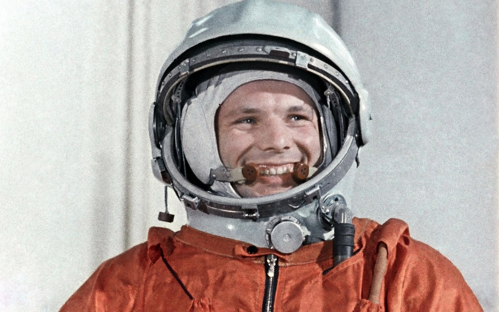
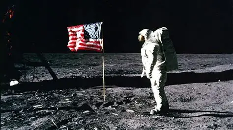
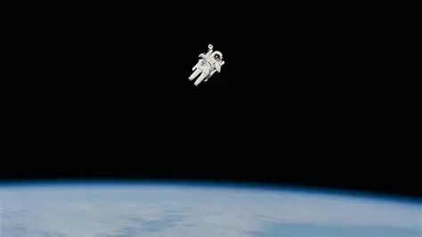
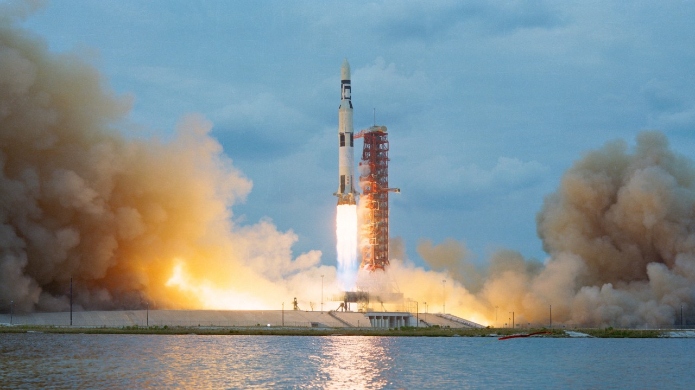
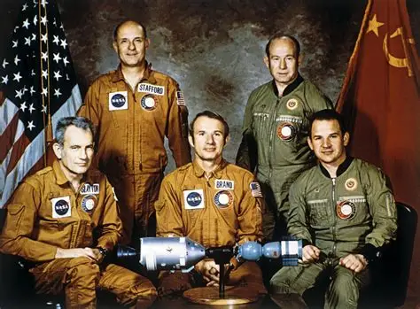

📺 Videos Históricos

Sputnik 1: El Comienzo
El momento histórico que inició la carrera espacial. El lanzamiento del primer satélite artificial cambió el mundo para siempre.
USSR
Yuri Gagarin: Primer Humano en el espacio
12 de abril de 1961. "La Tierra es azul". El cosmonauta soviético se convierte en el primer ser humano en el espacio.
USSR
Apollo 11: Un Paso Gigante
20 de julio de 1969. Neil Armstrong pisa la Luna. "Un pequeño paso para el hombre, un gran salto para la humanidad."
USA
Primera Caminata Espacial
Alexei Leonov se aventura fuera de su nave en 1965. 12 minutos que casi terminan en tragedia pero marcaron la historia.
USSR
Saturn V: La Bestia
El cohete más poderoso jamás construido. 111 metros de altura, 2,970 toneladas. La ingeniería que hizo posible el sueño lunar.
USA
Apollo-Soyuz: El Apretón
1975. El primer encuentro espacial internacional. El símbolo de que la cooperación puede vencer a la rivalidad.
USSR USA